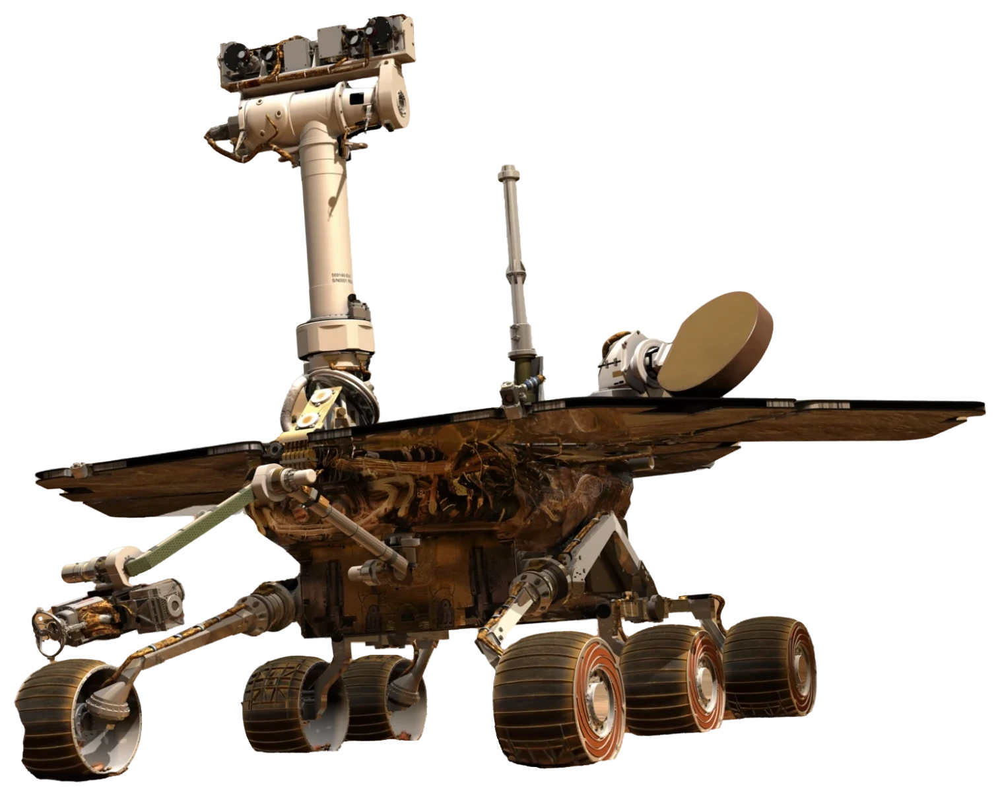

Rocker-bogie system

Mobility system had to fit inside the lander for the journey to Mars. After landing, it unfolded and locked into place so the rovers could drive away.
Pancam
To make a color picture, the Pancam takes three pictures of the same scene: one through a red filter, green filter, blue filter, and combines them into one color image.
The cameras also use filters that detect light at wavelengths from about 400 to 1,100 nanometres. Some of this light, called near-infrared, is invisible to our eyes. Different rocks and soils reflect light differently at different wavelengths and identify them.